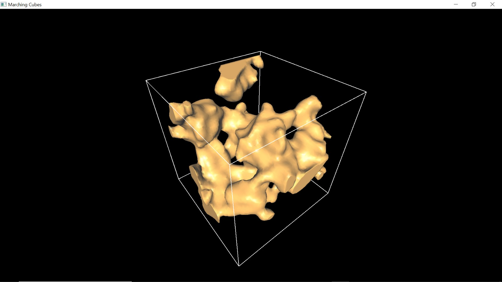

STEPS INVOLVE IN RUNNING MARCHING CUBE IMPLEMENATATION
The Matching Cube implementation is done in C++ using GLFW and GLEW dependencies
I clone the repository from https://github.com/Krafpy/Marching-Cubes/
I LAUNCH MY IDE WHICH IS CODEBLOCKS
- I created a new project by selecting the option for a "Console Application" in a new dialog window that pops up and click "Go".
- In the next window, i choose the programming language, which is C++, and click "Next".
- In the following window, i provide a name for the project and click "Next".
- The next window display the compiler type i'm using. I simply click "Next" to proceed.
- I open the console application project that i just created.
- I add the files from the src folder and also add the files from the include folder
which is located inside the clone project to the newly created project folder
- Save the changes made to the project files.
Note: The reason for adding the files from the cloned repository to the newly created console application
folder is because the clone repository was not originally made from codeblock.
Therefore it was not able to open as existing project
COPY HEADER, LIBRARY AND DLL FILE FROM EXTRACTED GLEW AND GLFW TO SOLVE DEPENDENCIES ISSUES
-
I performed the following file copies from the extracted GLEW folder:
-
From the include\GL folder:
- eglew.h
- glew.h
- glxew.h
- wglew.h
Destination Folder: C:\Program Files\CodeBlocks\MinGW\x86_64-w64-mingw32\include
-
From the lib\Release\x64 folder:
Destination Folder: C:\Program Files\CodeBlocks\MinGW\x86_64-w64-mingw32\lib
-
From the bin\Release\x64 folder:
Destination Folder: C:\Windows\System32
-
I copied the following files from the extracted GLFW folder:
-
From the GLFW include\GLFW folder:
Destination Folder: C:\Program Files\CodeBlocks\MinGW\x86_64-w64-mingw32\include
-
From the GLFW lib-mingw-w64 folder:
Destination Folder: C:\Program Files\CodeBlocks\MinGW\x86_64-w64-mingw32\lib
-
From the GLFW lib-mingw-w64 folder:
Destination Folder: C:\Windows\System32
-
Change Code Block Linker Settings
- Open the CodeBlocks IDE.
- From the menu bar, click on "Settings".
- In the settings menu, locate and click on the "Compiler" option.
- In the compiler settings dialog, navigate to the "Linker settings" tab.
- In the "Link libraries" box, click the "Add" button.
- Add the following libraries: glew32s.lb, glew32.lib, libglfw3.a, libopengl32.a, libgdi32.a, libglu32.a.
- Ensure that all the linker libraries are linked from the directory: C:\Program Files\CodeBlocks\MinGW\x86_64-w64-mingw32\lib.
NOTE I make sure that glew32s.lib is at the top of the list
I rebuild the project and run it successfully.
I used the control provided by the author of the code and it works succesfully.
HTML Image
